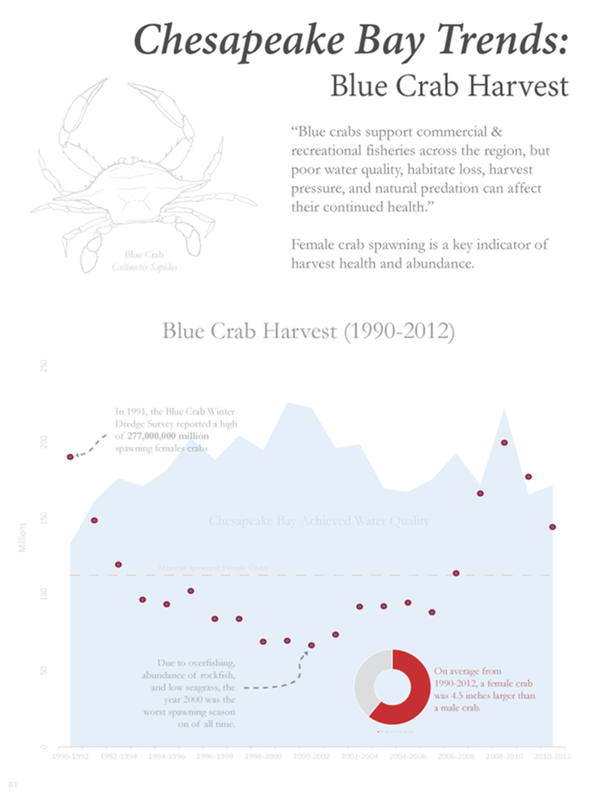

Works © Brittney Younger 2026
Please do not reproduce without written consent.
| STATIC VISUALIZATION |
by Brittney Younger
I developed this visualization for a course during my graduate studies. The assignment was to pick or create a dataset, analyze possible correlations, and depict overall results with a static or dynamic visualization.

The major challenges of this project were justifying a weak correlation and depicting the results. Although I think I could've worked on the water statistics a little more, it's an interesting way to review Maryland crabs. I primarily used Excel to create the main visualization.
Works © Brittney Younger 2026
Please do not reproduce without written consent.